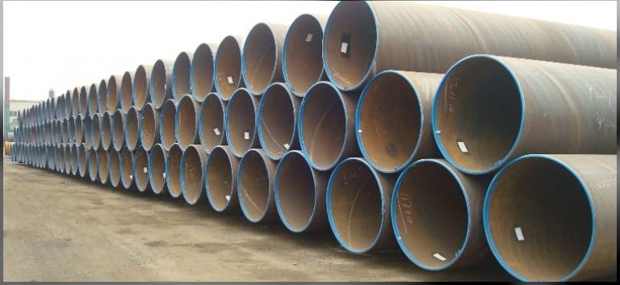

Cracteristici
Teava Sudata
Tevi sudate elicoidal pentru magistrale de fluide energetice (apa, gaz, petrol):
diametru: Ф 273.10 – 1626 mm;
grosime de perete: 4.20 – 14.20 mm;
lungime: 6000 - 13500 mm;
Standarde de fabricatie SR EN ISO 3183-2013, SR EN 10217, SR EN 10219 si SR 6898-1.
Uzual, tevile sunt livrate fara protejarea suprafetei exterioare.Tevile sunt supuse controlului de calitate prin metode nedistructive: raze X, ultrasonic, presiune hidrostatica. Materia prima din care este realizata, teava rotunda, ii asigura proprietatile fizice si finisajele de suprafata necesare domeniului constructiilor si industriei de apa/gaz/petrol.
Avem pe stoc si teava recuperata. Pentru detalii va rugam sa ne contactati pe numerele de telefon din pagina de contact.
